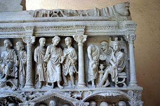
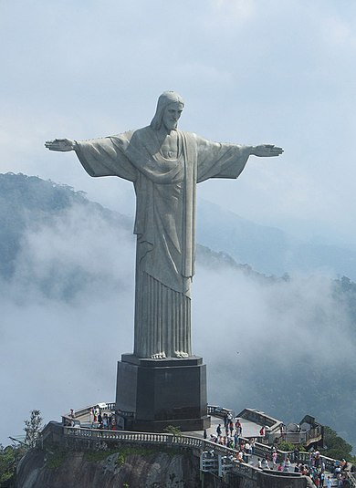
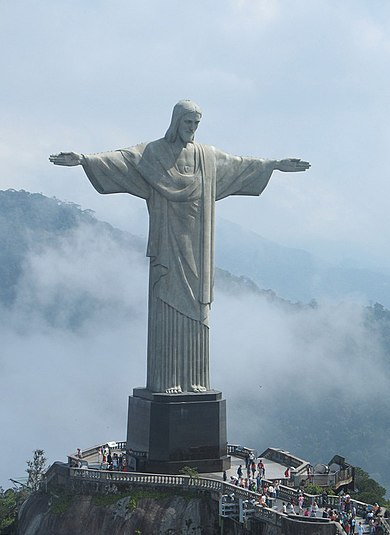

INCARNATION DU SITE
La représentation artistique de Jésus-Christ dans l'art chrétien, est devenue un thème majeur de l'art occidental,
ainsi qu'en Europe orientale.
Jésus-Christ a été représenté de différentes manières au cours des époques,
ainsi que pour illustrer les différents épisodes de sa vie codée par l'iconographie chrétienne.
Évolution de la représentation du Christ
Au tout début du christianisme, le Christ n'est pas représenté physiquement mais est évoqué d'abord par le chrisme et par des symboles comme celui de l'ichtus ou de l'agneau, puis par des métaphores comme l'Hermès-Bon Pasteur1.
À partir du iie siècle, l'iconographie de Jésus emprunte en Occident ses traits aux divinités païennes et privilégie le type hellénistique : il est généralement représenté comme un jeune homme imberbe (pour le différencier des philosophes grecs, des devins et des dieux païens, tous barbus), aux cheveux courts et bouclés, vêtu d'une toge ou d'une tunique, reprenant le modèle de l'Orateur, avec le bras droit enroulé dans les plis de son manteau et la main posée sur la poitrine, le bras gauche appuyé sur la hanche2. Les artistes en Orient privilégient le type syro-palestinien, un personnage majestueux, barbu et aux cheveux longs. Le Christ hellénistique et le Christ sémitique coexistent jusqu'au xie siècle, période qui voit les artistes choisir sa physionomie définitive : « visage méditerranéen, aux traits "aryens" pour le distinguer du type "juif" de ses persécuteurs, longue chevelure noire partagée par une raie centrale, retombant sur les épaules, yeux noirs, le tout animé d'une expression profondément humaine »3.
Des typologies générales, des schémas légués par la tradition (attributs, attitudes, expressions), les artistes religieux de la pré-Renaissance et la Renaissance savent tirer un type de Christ particulier, sorti du moule d'une esthétique personnelle et enrichi par leur imagination4.
La forme choisie pour cette statue n'est pas anodine. Le Christ se tient droit, les bras écartés, en signe d'ouverture. C'est l'un des symboles forts de l'oeuvre. Citon l'écrivain autrichien Stefan Zweig qui s'exprima ainsi lors de sa première visite au Brésil, peu après l'inauguration.

 
ACCUEIL

ACCUEIL